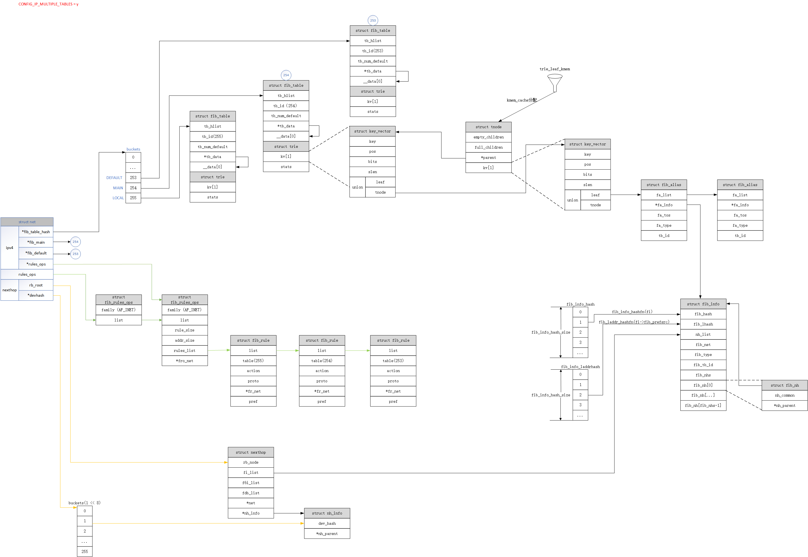

路由子系统
1. 概念
互联网服务提供商（ISP）：提供访问互联网的公司或组织。
不可路由地址：10.0.0.0/8、172.16.0.0/16~172.31.0.0/16、192.168.0.0/16、127.0.0.0/8
Scope：在linux中，路由的scope表示到目的网络的距离；IP的scope表示该IP距离本地主机有多远。
enum rt_scope_t {
RT_SCOPE_UNIVERSE=0, // 下一跳网关的路由项
/* User defined values */
RT_SCOPE_SITE=200, // 只在IPv6中使用
RT_SCOPE_LINK=253, // 目的地为本地网络地址的路由项；子网广播地址的路由项
RT_SCOPE_HOST=254, // 本地接口的路由项
RT_SCOPE_NOWHERE=255 // 非法的scope，没有目的地的路由项
};
默认网关：当目的地没有确定的路由时使用的路由。
定向广播（Directed Broadcasts）：定向广播的目的地是远端子网的广播地址。由于无法区分恶意还是善意，Linux路由子系统不允许丢弃任何定向广播，管理员可以使用过滤系统来做处理。
主地址和辅助地址：每个接口上可以配置多个主地址和多个辅助地址。对于一个特定的子网掩码，只能有一个主地址。
- 主地址可以降低CPU开销
- 当删除一个主地址时，所有关联的辅助地址也被删除。但通过配置/proc选项（net.ipv4.conf.eth0.promote_secondaries），使得在当前主地址被删除时可以将辅助地址提升为主地址。
- 当主机为本地生成的流量选择IP地址时，只考虑主地址。
- 路由表
默认情况下，Linux使用两张路由表：
- 一张表用于本地地址。从该表查找成功表明封包要交给主机自己。
- 一张表用于所有其他的路由。可以手工配置或由路由协议动态插入。
路由类型：
enum {
RTN_UNSPEC,
RTN_UNICAST, /* Gateway or direct route */
RTN_LOCAL, /* Accept locally */
RTN_BROADCAST, /* Accept locally as broadcast, send as broadcast */
RTN_ANYCAST, /* Accept locally as broadcast, but send as unicast */
RTN_MULTICAST, /* Multicast route */
RTN_BLACKHOLE, /* Drop */
RTN_UNREACHABLE, /* Destination is unreachable */
RTN_PROHIBIT, /* Administratively prohibited */
RTN_THROW, /* Not in this table */
RTN_NAT, /* Translate this address */
RTN_XRESOLVE, /* Use external resolver */
__RTN_MAX
};
路由缓存：Linux 内核3.5版本以前同时使用了路由缓存和路由表。
- 路由缓存查找：从一张简单hash表中寻找完全匹配项。
- 路由表查找：基于最长前缀匹配（Longest Prefix Match，LPM）算法。
缓存垃圾回收：
- 同步回收：缓存数量达到阈值；内存紧张。
- 异步回收：定时器实现。过期应当被删除；没有过期但内存紧张。
内核3.6版本以后移除了路由缓存，不再缓存路由项，只缓存下一跳。
封包接收和发送都需要路由表。一般一个封包仅需要进行一次查找，但有些情况（IP-over-IP）可能要多做一次路由查找。
2. 高级路由
2.1. 策略路由
如果内核支持策略路由，那么可以有255张不同的，相互独立的路由表。
策略路由的主要思想：除了根据目的IP地址配置路由，允许用户还可以根据其他多个参数来配置路由。比如：入口设备、源IP地址等。
方式：单路由表、多路由表
查找步骤：根据策略选择路由表 -> 从表中查找路由
常用策略：
- 源IP地址 （也可同目的IP地址做组合）
- 入口设备
- TOS（划分流量类型，比如：大批量数据、交互式）
- Fwmark（根据防火墙分类来定义策略路由规则）
2.2. 多路径路由
多路径：指管理员可以为一条路由的目的地指定多个下一跳。
$ ip route add default scope global nexthop via 100.100.100.1 weight 1 nexthop via 200.200.200.1 weight 2
选择下一跳：使用加权循环算法
给定一条多路径路由，流量分配方式：
- 基于流 （根据源IP和目的IP的组合）
- 基于连接（五元组）
- 基于封包
2.3. 分类
流量控制子系统中的一个分类器，可以基于realm来将路由分类。Realm是可以在策略和路由上指定的数字标签。
Netfilter子系统可以在钩子上放置标签，这些标签可以给路由子系统或流量控制子系统使用。
2.3. ICMP重定向
三种方式将路由插入到内核路由表：
- 用户命令静态配置（ip route、route）
- 路由协议（BGP、RGP、OSPF）
- 由于配置不理想而由内核接收和处理的ICMP重定向消息
ICMP REDIRECT 消息，用于向封包源地址主机通知使用的路由不是最理想路由。
当配置为不同子网的主机连接到同一个LAN时，IP路由文档称之为共享介质（shared media）。
2.3.1. 发送 ICMP REDIRECT 消息
static int __mkroute_input(...)
{
...
// 入口设备 == 出口设备 && 出口设备允许发送重定向
if (out_dev == in_dev && err && IN_DEV_TX_REDIRECTS(out_dev) &&
skb->protocol == htons(ETH_P_IP)) {
__be32 gw;
gw = nhc->nhc_gw_family == AF_INET ? nhc->nhc_gw.ipv4 : 0;
// 出口设备配置为共享介质 || 新网关和发送方位于同一子网
if (IN_DEV_SHARED_MEDIA(out_dev) || inet_addr_onlink(out_dev, saddr, gw))
// 给数据包打重定向标记
IPCB(skb)->flags |= IPSKB_DOREDIRECT;
}
...
}
int ip_forward(struct sk_buff *skb)
{
...
/*
* We now generate an ICMP HOST REDIRECT giving the route
* we calculated.
*/
if (IPCB(skb)->flags & IPSKB_DOREDIRECT && !opt->srr &&
!skb_sec_path(skb))
ip_rt_send_redirect(skb);
...
}
2.3.2. 接收 ICMP REDIRECT 消息
// icmp_rcv -> icmp_redirect -> icmp_err -> ipv4_redirect -> __ip_do_redirect
static void __ip_do_redirect(struct rtable *rt, struct sk_buff *skb, struct flowi4 *fl4, bool kill_route)
{
// 设备允许接收重定向消息
if (!IN_DEV_RX_REDIRECTS(in_dev))
goto reject_redirect;
// 设备配置为共享介质
if (!IN_DEV_SHARED_MEDIA(in_dev)) {
if (!inet_addr_onlink(in_dev, new_gw, old_gw))
goto reject_redirect;
// 检查安全重定向配置，新网关是默认网关
if (IN_DEV_SEC_REDIRECTS(in_dev) && ip_fib_check_default(new_gw, dev))
goto reject_redirect;
} else {
// 新网关是已知的远端单播主机地址
if (inet_addr_type(net, new_gw) != RTN_UNICAST)
goto reject_redirect;
}
...
// 更新arp、fib表
}
- ICMP REDIRECT 消息中宣告的新网关应当和当前网关不同
- 新网关的IP地址不能是多播、无效、保留地址
- 接收设备必须配置为允许接收重定向消息
3. 实现

3.1. 主要数据结构
struct rtable; // 路由表项，
struct dst_entry;
struct dst_ops;
struct fib_table; // 路由表。比如MAIN表、LOCAL表，不要跟路由表缓存（ip_dst_cache）混淆
struct fib_info; // 路由条目
struct fib_alias; // 优化，可共享fib_info结构，区分一些参数不同的路由
struct fib_rule; // 策略路由规则
struct nexthop;
struct flowi4; // 定义了在路由表中查找的键，包含了目标地址，源地址，TOS等
struct fib_result; // 路由表查找结果
struct in_ifaddr;
struct in_device;
3.1.1. rtable
// rtable 缓存的路由表项
struct rtable {
struct dst_entry dst;
int rt_genid;
unsigned int rt_flags;
__u16 rt_type; // 路由类型
__u8 rt_is_input; // 入口路由时为1，出口路由时为0
__u8 rt_uses_gateway; // 下一跳是网关时为1，下一跳为直达路由时为0
int rt_iif; // 入口设备标识符
u8 rt_gw_family;
/* Info on neighbour */
union {
__be32 rt_gw4; // 下一跳网关
struct in6_addr rt_gw6;
};
...
struct list_head rt_uncached;
struct uncached_list *rt_uncached_list;
};
// dst_entry 缓存路由项中协议无关的信息
struct dst_entry {
struct net_device *dev; // 出口设备
struct dst_ops *ops; // 操作dst_entry结构的虚拟函数表
unsigned long expires; // 过期时间戳
// 处理入口封包和处理出口封包的函数
int (*input)(struct sk_buff *);
int (*output)(struct net *net, struct sock *sk, struct sk_buff *skb);
...
};
3.1.2. fib_table
struct fib_table {
struct hlist_node tb_hlist; // 会链到net->ipv4.fib_table_hash槽里
u32 tb_id; // 表标识符
int tb_num_default; // 表中默认路由的数目
struct rcu_head rcu;
unsigned long *tb_data; // 占位符
unsigned long __data[]; // 占位符，后面跟路由条目（trie）
};
3.1.3. fib_result
struct fib_result {
__be32 prefix;
unsigned char prefixlen; // 前缀长度，代表网络掩码
unsigned char nh_sel; // 下一跳的个数。仅使用一个下一跳时为0；在多路径路由中，可以有多个下一跳
unsigned char type; // 来自fib_alias->fa_type
unsigned char scope;// 来自fib_alias->fa_scope
u32 tclassid;
struct fib_nh_common *nhc;
struct fib_info *fi; // 指向一个fib_info对象，代表一个路由条目
struct fib_table *table; // 指向当前查找的fib表
struct hlist_head *fa_head; // 指向一个fib_alias列表
};
3.1.4. fib_info
struct fib_info {
struct hlist_node fib_hash; // 链到哈希表fib_info_hash
struct hlist_node fib_lhash; // 链到哈希表fib_info_laddrhash
struct list_head nh_list; // 链到链表nexthop->fi_list上
struct net *fib_net; // 所属命名空间
int fib_treeref; // 引用计数器，表示引用持有者fib_alias的数量
refcount_t fib_clntref; // 引用计数器
unsigned int fib_flags;
unsigned char fib_dead; // 标志是否可以释放fib_info，
unsigned char fib_protocol; // 路由协议
unsigned char fib_scope; // 目标地址的范围
unsigned char fib_type; // 路由类型
__be32 fib_prefsrc; // 某些情况下，希望为查找键提供特定的源地址
u32 fib_tb_id; // 表id
u32 fib_priority; // 路由优先级。优先级的值越高，优先级越低。
struct dst_metrics *fib_metrics; // 指标
#define fib_mtu fib_metrics->metrics[RTAX_MTU-1]
#define fib_window fib_metrics->metrics[RTAX_WINDOW-1]
#define fib_rtt fib_metrics->metrics[RTAX_RTT-1]
#define fib_advmss fib_metrics->metrics[RTAX_ADVMSS-1]
int fib_nhs; // 下一跳的个数
bool fib_nh_is_v6;
bool nh_updated;
struct nexthop *nh;
struct rcu_head rcu;
struct fib_nh fib_nh[]; // 下一跳（可能有多个）
};
3.1.5. fib_alias
有时会创建到同一目标地址或同一子网的多个路由条目，这些路由条目仅在它们的 TOS 值上有所不同。不是为每个路由创建一个 fib_info ，而是创建一个 fib_alias 对象。fib_alias较小，可减少内存消耗。
$ ip route add 192.168.1.10 via 192.168.2.1 tos 0x2
$ ip route add 192.168.1.10 via 192.168.2.1 tos 0x4
$ ip route add 192.168.1.10 via 192.168.2.1 tos 0x6
fib_alias 对象存储到同一子网但具有不同参数的路由。一个fib_info对象，可以被多个fib_alias共享。
struct fib_alias {
struct hlist_node fa_list;
struct fib_info *fa_info; // 指向fib_info结构
u8 fa_tos; // 路由的服务类型位
u8 fa_type; // 路由类型
u8 fa_state;
u8 fa_slen;
u32 tb_id; // 路由表id
s16 fa_default;
u8 offload:1,
trap:1,
offload_failed:1,
unused:5;
struct rcu_head rcu;
};
3.1.6. fib_prop
struct fib_prop {
int error; // 错误
u8 scope; // 范围
};
// 每一种路由类型fib_type都有一个fib_prop实例。
// fib_prop中包含了该路由的错误和范围
const struct fib_prop fib_props[RTN_MAX + 1] = {
...
[RTN_UNREACHABLE] = {
.error = -EHOSTUNREACH,
.scope = RT_SCOPE_UNIVERSE,
},
[RTN_PROHIBIT] = {
.error = -EACCES,
.scope = RT_SCOPE_UNIVERSE,
},
...
};
比如当 fib_type 为 RTN_PROHIBIT 时，将发送 “数据包过滤” （ICMP_PKT_FILTERED）消息。
# 当数据包从 192.168.2.103 发送到 192.168.1.17 时，查完入口路由返回错误时，由ip_error()方法处理。根据返回的EACCES错误，将会发送ICMP_PKT_FILTERED消息。
$ ip route add prohibit 192.168.1.17 from 192.168.2.103
3.1.7. fib_nh
对于每个下一跳，内核使用fib_nh存储额外跟踪的信息。
struct fib_nh {
struct fib_nh_common nh_common;
struct hlist_node nh_hash;
struct fib_info *nh_parent; // 指向fib_info结构
#ifdef CONFIG_IP_ROUTE_CLASSID
__u32 nh_tclassid;
#endif
__be32 nh_saddr;
int nh_saddr_genid;
#define fib_nh_family nh_common.nhc_family
#define fib_nh_dev nh_common.nhc_dev // 出口网络设备
#define fib_nh_oif nh_common.nhc_oif // 出口设备标识符
#define fib_nh_flags nh_common.nhc_flags
#define fib_nh_lws nh_common.nhc_lwtstate
#define fib_nh_scope nh_common.nhc_scope
#define fib_nh_gw_family nh_common.nhc_gw_family
#define fib_nh_gw4 nh_common.nhc_gw.ipv4 // 下一跳网关的IP地址
#define fib_nh_gw6 nh_common.nhc_gw.ipv6
#define fib_nh_weight nh_common.nhc_weight
#define fib_nh_upper_bound nh_common.nhc_upper_bound
};
struct fib_nh_common {
struct net_device *nhc_dev;
int nhc_oif;
unsigned char nhc_scope;
u8 nhc_family;
u8 nhc_gw_family;
unsigned char nhc_flags;
struct lwtunnel_state *nhc_lwtstate;
union {
__be32 ipv4;
struct in6_addr ipv6;
} nhc_gw;
int nhc_weight;
atomic_t nhc_upper_bound;
/* v4 specific, but allows fib6_nh with v4 routes */
struct rtable __rcu * __percpu *nhc_pcpu_rth_output;
struct rtable __rcu *nhc_rth_input;
struct fnhe_hash_bucket __rcu *nhc_exceptions;
};
3.1.8. fib_nh_exception
下一跳异常：用来处理路由条目不是由于用户空间操作而更改的情况，而是由于ICMP重定向消息或路径MTU发现的结果。
struct fib_nh_exception {
struct fib_nh_exception __rcu *fnhe_next;
int fnhe_genid;
__be32 fnhe_daddr; // 散列键
u32 fnhe_pmtu;
bool fnhe_mtu_locked;
__be32 fnhe_gw;
unsigned long fnhe_expires;
struct rtable __rcu *fnhe_rth_input;
struct rtable __rcu *fnhe_rth_output;
unsigned long fnhe_stamp;
struct rcu_head rcu;
};
struct fnhe_hash_bucket {
struct fib_nh_exception __rcu *chain;
};
__ip_do_redirect 和 __ip_rt_update_pmtu 中调用 update_or_create_fnhe 来设置异常。
3.1.9. dst_ops
struct dst_ops {
unsigned short family;
// 检查一个废弃的dst_entry是否还有用
struct dst_entry * (*check)(struct dst_entry *, __u32 cookie);
// 删除dst_entry前的一些清理工作
void (*destroy)(struct dst_entry *);
// 当一个设备被关闭或注销时，每一个受影响的dst_entry都要调用该函数一次。
void (*ifdown)(struct dst_entry *,
struct net_device *dev, int how);
// 向DST通知dst_entry实例出现问题
struct dst_entry * (*negative_advice)(struct dst_entry *);
// 由于目的地不可达而出现封包传输问题
void (*link_failure)(struct sk_buff *);
// 更新缓存路由项的pmtu
void (*update_pmtu)(struct dst_entry *dst, struct sock *sk,
struct sk_buff *skb, u32 mtu,
bool confirm_neigh);
// icmp 重定向
void (*redirect)(struct dst_entry *dst, struct sock *sk,
struct sk_buff *skb);
int (*local_out)(struct net *net, struct sock *sk, struct sk_buff *skb);
struct neighbour * (*neigh_lookup)(const struct dst_entry *dst,
struct sk_buff *skb,
const void *daddr);
// 上层协议用来进行邻居可达性确认
void (*confirm_neigh)(const struct dst_entry *dst,
const void *daddr);
// 缓存池
struct kmem_cache *kmem_cachep;
struct percpu_counter pcpuc_entries ____cacheline_aligned_in_smp;
};
3.2. 路由子系统初始化
3.2.1. 路由初始化
int __init ip_rt_init(void)
{
// 为rtable分配池（使用kmem_cache）
ipv4_dst_ops.kmem_cachep = kmem_cache_create("ip_dst_cache", sizeof(struct rtable), 0, SLAB_HWCACHE_ALIGN|SLAB_PANIC, NULL);
devinet_init();
ip_fib_init();
// 添加文件/proc/net/rt_cahe、/proc/net/stat/rt_cahe
ip_rt_proc_init();
...
}
void __init devinet_init(void)
{
// 注册netdevice事件通知的回调函数，比如网卡UP、DOWN事件
register_netdevice_notifier(&ip_netdev_notifier);
// 注册netlink命令的处理函数，比如增删地址
rtnl_register(PF_INET, RTM_NEWADDR, inet_rtm_newaddr, NULL, 0);
rtnl_register(PF_INET, RTM_DELADDR, inet_rtm_deladdr, NULL, 0);
rtnl_register(PF_INET, RTM_GETADDR, NULL, inet_dump_ifaddr, 0);
rtnl_register(PF_INET, RTM_GETNETCONF, inet_netconf_get_devconf,
inet_netconf_dump_devconf, 0);
}
void __init ip_fib_init(void)
{
// FIB的字典树实现初始化，申请了两个kmem_cache：ip_fib_alias、ip_fib_trie
fib_trie_init();
// pernet初始化：fib_net_init
register_pernet_subsys(&fib_net_ops);
// 注册netdevice事件通知的回调函数，比如网卡UP、DOWN事件
register_netdevice_notifier(&fib_netdev_notifier);
register_inetaddr_notifier(&fib_inetaddr_notifier);
// 注册netlink命令的处理函数，比如增删路由（ip route）
rtnl_register(PF_INET, RTM_NEWROUTE, inet_rtm_newroute, NULL, 0);
rtnl_register(PF_INET, RTM_DELROUTE, inet_rtm_delroute, NULL, 0);
rtnl_register(PF_INET, RTM_GETROUTE, NULL, inet_dump_fib, 0);
}
static int __net_init fib_net_init(struct net *net)
{
error = ip_fib_net_init(net);
...
// /proc/net/fib_trie、/proc/net/fib_triestat、/proc/net/route
error = fib_proc_init(net);
}
static int __net_init ip_fib_net_init(struct net *net)
{
// 存放网络命名空间下所有路由表
net->ipv4.fib_table_hash = kzalloc(size, GFP_KERNEL);
// 是否支持策略路由，由内核选项CONFIG_IP_MULTIPLE_TABLES控制
// 不支持策略路由：创建MAIN、LOCAL等路由表（fib_table）
// 支持策略路由：创建MAIN、LOCAL、DEFAULT等规则（fib_rule）
err = fib4_rules_init(net);
}
3.2.2. 规则初始化
static struct pernet_operations fib_rules_net_ops = {
.init = fib_rules_net_init,
.exit = fib_rules_net_exit,
};
static int __init fib_rules_init(void)
{
int err;
// 注册netlink命令的处理函数，比如增删规则（ip rule）
rtnl_register(PF_UNSPEC, RTM_NEWRULE, fib_nl_newrule, NULL, 0);
rtnl_register(PF_UNSPEC, RTM_DELRULE, fib_nl_delrule, NULL, 0);
rtnl_register(PF_UNSPEC, RTM_GETRULE, NULL, fib_nl_dumprule, 0);
err = register_pernet_subsys(&fib_rules_net_ops);
err = register_netdevice_notifier(&fib_rules_notifier);
...
}
subsys_initcall(fib_rules_init);
3.2.3. 下一跳初始化
static struct pernet_operations nexthop_net_ops = {
.init = nexthop_net_init,
.exit = nexthop_net_exit,
};
static int __init nexthop_init(void)
{
register_pernet_subsys(&nexthop_net_ops);
register_netdevice_notifier(&nh_netdev_notifier);
rtnl_register(PF_UNSPEC, RTM_NEWNEXTHOP, rtm_new_nexthop, NULL, 0);
rtnl_register(PF_UNSPEC, RTM_DELNEXTHOP, rtm_del_nexthop, NULL, 0);
rtnl_register(PF_UNSPEC, RTM_GETNEXTHOP, rtm_get_nexthop,
rtm_dump_nexthop, 0);
// 注册netlink命令的处理函数，比如增删下一跳（ip nexthop）
rtnl_register(PF_INET, RTM_NEWNEXTHOP, rtm_new_nexthop, NULL, 0);
rtnl_register(PF_INET, RTM_GETNEXTHOP, NULL, rtm_dump_nexthop, 0);
rtnl_register(PF_INET6, RTM_NEWNEXTHOP, rtm_new_nexthop, NULL, 0);
rtnl_register(PF_INET6, RTM_GETNEXTHOP, NULL, rtm_dump_nexthop, 0);
rtnl_register(PF_UNSPEC, RTM_GETNEXTHOPBUCKET, rtm_get_nexthop_bucket,
rtm_dump_nexthop_bucket, 0);
return 0;
}
subsys_initcall(nexthop_init);
3.3. 路由查找
路由子系统提供了两种查找函数：
- ip_route_input：用于入口流量的路由查找。
- ip_route_output：用于出口流量的路由查找。
他们最终都会调用fib_lookup来查找路由表，
static inline int fib_lookup(struct net *net, const struct flowi4 *flp,
struct fib_result *res, unsigned int flags)
{
tb = fib_get_table(net, RT_TABLE_MAIN);
if (tb)
// 根据表中的trie结构，使用最长前缀匹配获取到叶子节点，把结构存到res中
err = fib_table_lookup(tb, flp, res, flags | FIB_LOOKUP_NOREF);
}
3.3.1. 过期
static inline bool rt_is_expired(const struct rtable *rth)
{
return rth->rt_genid != rt_genid_ipv4(dev_net(rth->dst.dev));
}
void rt_cache_flush(struct net *net)
{
// atomic_inc(&net->ipv4.rt_genid);
rt_genid_bump_ipv4(net);
}
触发刷新的事件：
- 设备启动或关闭
- 向设备添加或删除一个IP地址
- 全局转发状态或设备的转发状态发生变化
- 一条路由被删除
- 通过/proc接口请求进行管理性刷新